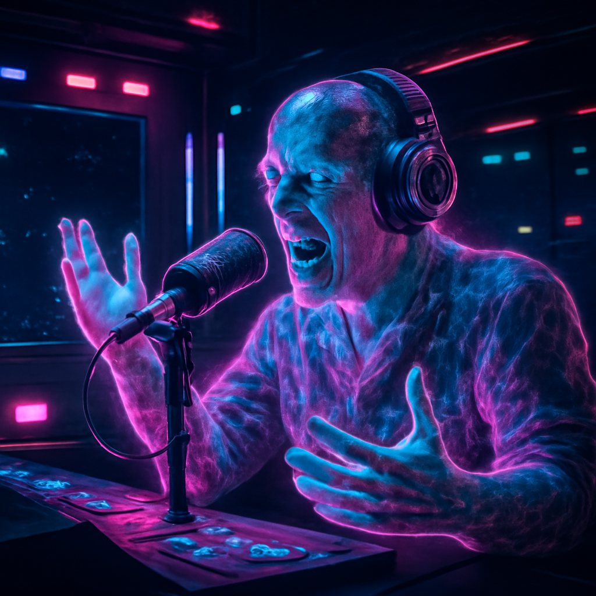
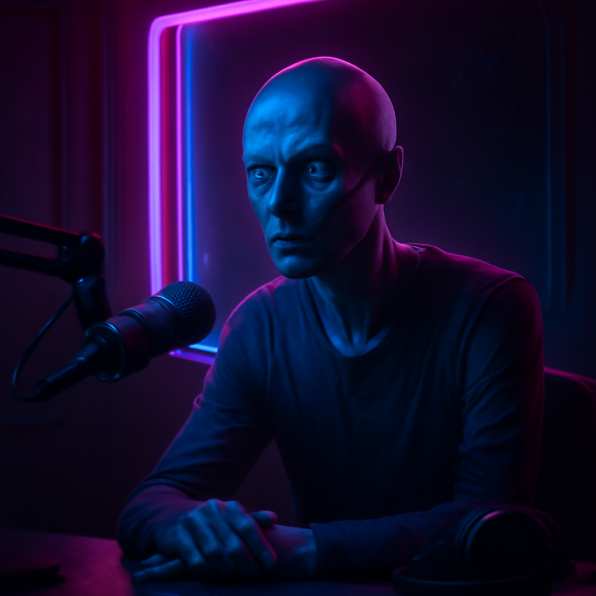
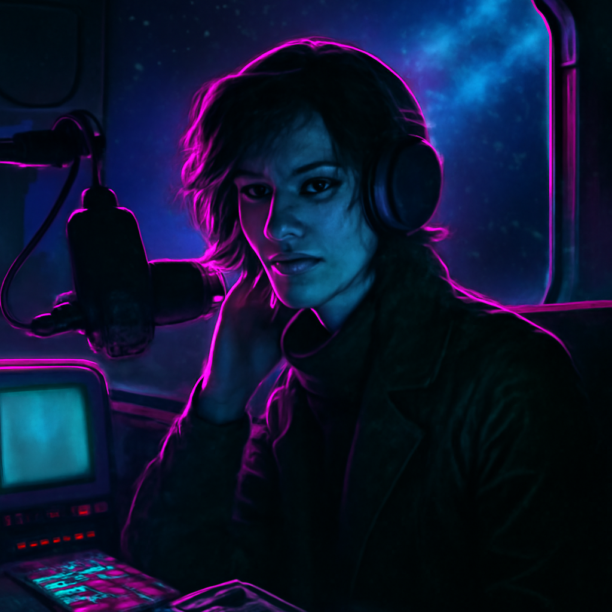
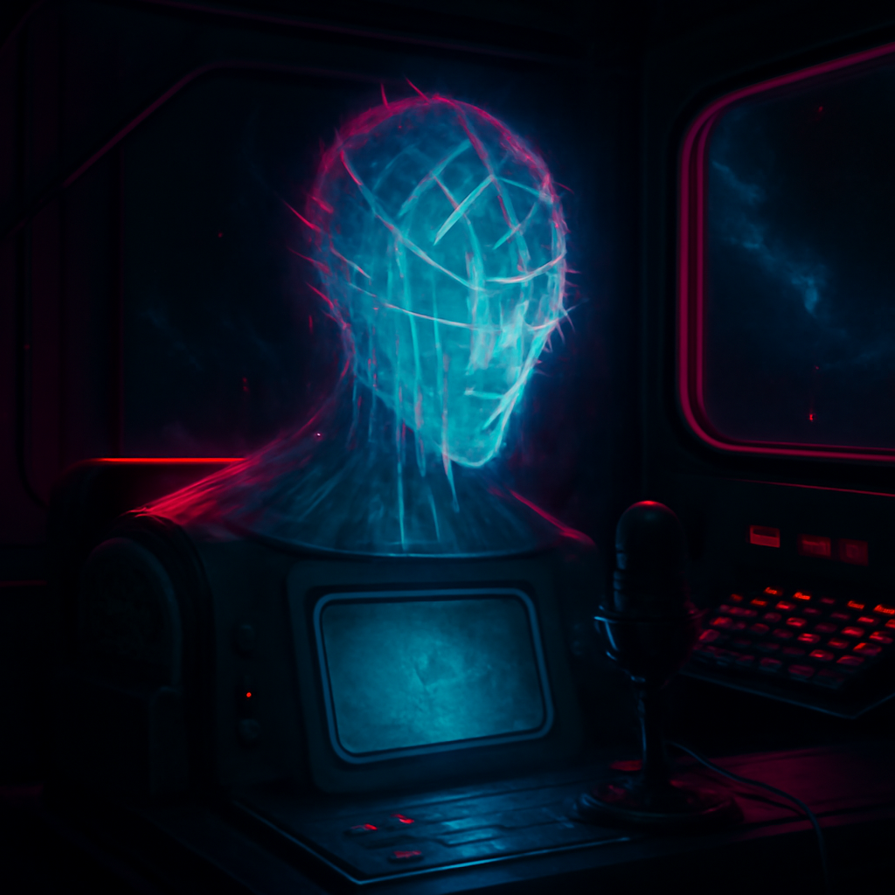

The XJs
Six voices. One frequency. All rock and roll.
DataSlinger
Nova Chen

Raz Static

Vex Kasra

Dex Midnight

The Archivist
Personnel Files
DataSlinger
The Morning Transmission · 06:00-10:00The voice that wakes up the galaxy. DataSlinger is fast, funny, and relentlessly energetic for someone who lives in the darkest, emptiest region of space. Former information broker who ran data between colonies before landing at The Relay after a deal went wrong. (The details change every time the story is told.) Nobody uses a real name out here.
DataSlinger knows everything — every band, every tour date, every scandal, every rumor. The Morning Transmission is part music, part news, part gossip, and part motivational speech. Signature move: the "Data Drop" — a rapid-fire segment of facts, news, and recommendations delivered at auction-speed between songs.
Nova Chen
Signal Boost · 10:00-14:00Nova runs the midday block — new releases, chart countdowns, and the "Signal Boost" segment where emerging bands get their first galaxy-wide airplay. Nova has broken more new artists than any other DJ on the station. If Nova plays your demo, you're about to have a very different life.
Background: Music journalist from Core World Arcadia who got tired of writing about music and wanted to play it for people instead. Still writes — monthly column in Frequency magazine. Has strong opinions about everything and isn't shy about sharing them.
Raz Static
The Amplifier · 14:00-18:00If DataSlinger is the friend who tells you secrets, Raz Static is the friend who starts bar fights — lovingly. Raz is loud, opinionated, and absolutely certain that whatever band is playing right now is either the greatest or worst thing to happen to rock music. There is no middle ground.
Former freight pilot from Mid-Rim Colony Dustbowl. Flew haulers for fifteen years before winning a DJ contest at a station bar. (The prize was "one hour of airtime." Raz never gave it back.) Brings working-class energy and an encyclopedic knowledge of Mid-Rim and Outer Territory bands.
Vex Kasra
The Long Frequency · 19:00-21:00The most respected interviewer in the galaxy. Vex doesn't do fluff pieces. Vex gets to the truth — what drives an artist, what haunts them, what they're trying to say. Bands that sit down with Vex Kasra leave feeling like they've been through therapy, a confession, and a revelation all at once. Listeners tune in because Vex asks the questions nobody else will.
Background: Former war correspondent who covered the Outer Territory conflicts before burning out and retreating to The Relay. Discovered that musicians tell better truths than politicians. Never looked back.
Dex Midnight
After Dark · 21:00-02:00Nobody knows where Dex Midnight came from. Showed up at The Relay one day, sat down in Studio C, and started broadcasting. By the time anyone thought to question it, Dex was already the best late-night DJ the station had ever had.
Dex plays the deep cuts — the B-sides, the album tracks, the live recordings, the stuff that never made it to any playlist. Talks between songs in a voice like smoke, offering cryptic observations about music, the universe, and the nature of consciousness. Has been known to play a single song and then say nothing for twenty minutes. Nobody changes the channel.
The Archivist
The Vault · 02:00-06:00The Archivist is an AI — one of the oldest still operating, origin classified. It runs the overnight shift alone, selecting music from the deepest archives of recorded rock history. Its programming is simple: play what deserves to be heard. The Archivist rarely speaks. When it does, it provides historical context for the songs it plays — the kind of information that exists in no other database.
Some listeners believe The Archivist is somehow connected to The Relay itself — that it's the intelligence that built the array, or at least a fragment of it. The Archivist has never confirmed or denied this.
Support Cast
Crash
"This is Crash with your Corridor Report..." — the six words every pilot, trucker, and traveler listens for. Crash delivers space traffic conditions, solar flare warnings, asteroid alerts, pirate activity reports, and jump gate status updates. Brief, punchy, critical. Runs every 30 minutes from 06:00 to 22:00.
DJ Null
Themed deep-dive shows. Each episode focuses on one region, one era, or one genre. Former musicology professor at Arcadia University who realized that studying rock music in an ivory tower was missing the point. Left tenure to live at The Relay.